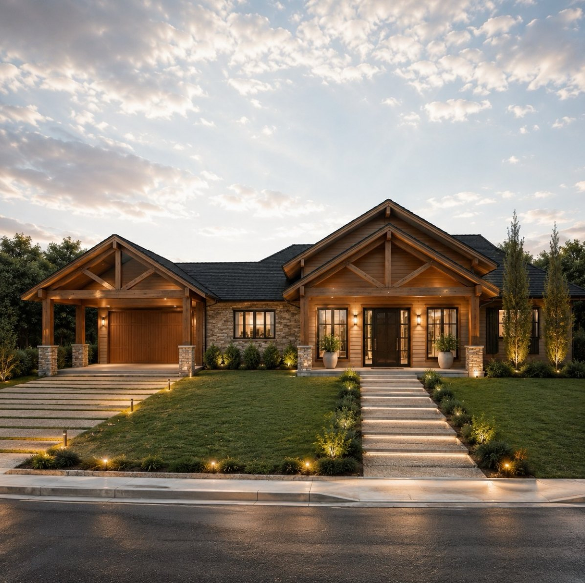
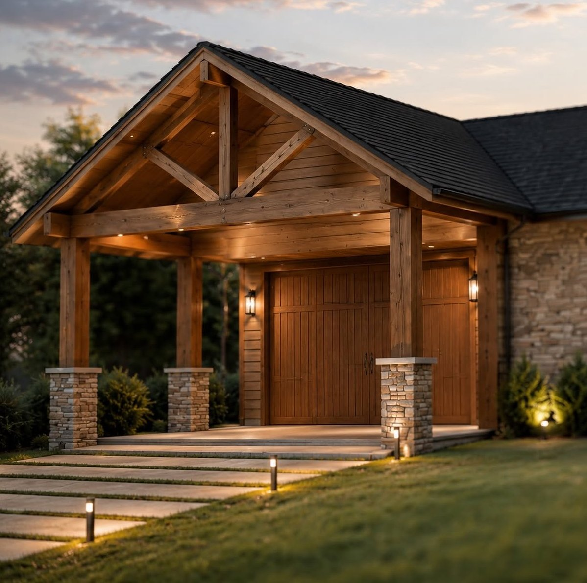
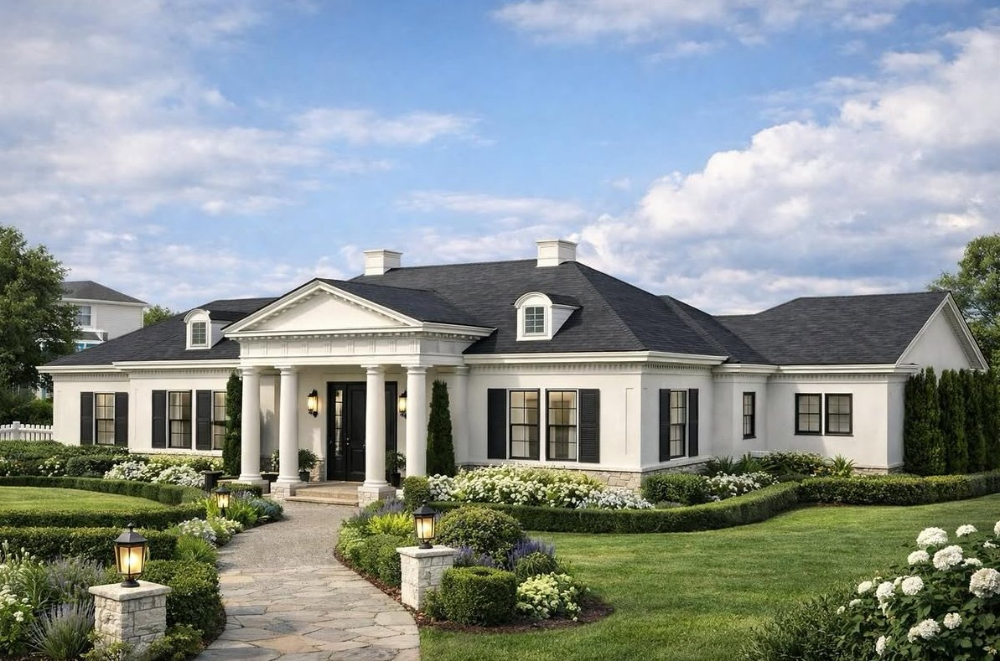
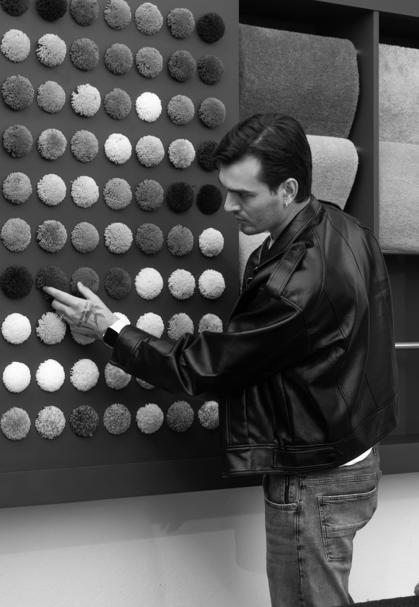

Projeto Residencial
Casas do zero ou reformas, com fachadas marcantes, boa implantação no terreno e fluidez entre os ambientes.

Arquitetura & Interiores · Santa Catarina
Projetos residenciais e de interiores que unem sofisticação, funcionalidade e identidade.
Sobre
Sou Lucas Matté, arquiteto. Projeto casas e interiores que traduzem a personalidade de quem vive neles — de fachadas clássicas e atemporais a casas de campo em madeira e pedra, sempre com o mesmo cuidado com luz, materiais e paisagismo.
Cada projeto nasce de uma escuta atenta e é pensado para ser elegante, funcional e, acima de tudo, acolhedor.
Serviços
Casas do zero ou reformas, com fachadas marcantes, boa implantação no terreno e fluidez entre os ambientes.
Layout, marcenaria, iluminação, revestimentos e curadoria de materiais para ambientes com identidade.
Halls, lojas e áreas de uso coletivo que unem impacto visual, acessibilidade e conforto.
Jardins, caminhos e iluminação externa que completam a arquitetura e valorizam a chegada em casa.
Portfólio


Destaque · Decorare 2025
Na mostra Decorare Santa Catarina 2025, Lucas Matté assinou seis ambientes que traduzem sofisticação, funcionalidade e identidade, unindo design arrojado, conforto e um olhar inovador sobre a arquitetura de interiores.
Uma experiência sensorial que une design moderno à grandiosidade da Amazônia, com materiais nobres que valorizam a cultura e a paisagem da região.
Inclusão, conforto e sofisticação: acessibilidade sem abrir mão da elegância.
O porcelanato Amazonita como protagonista, com iluminação estratégica para um espaço de bem-estar.
Acabamentos refinados e texturas selecionadas que transformam o espaço em um refúgio.

Como trabalho
Conversa inicial para entender necessidades, estilo de vida, prazos e investimento.
Conceito, layout e imagens 3D realistas para validar a ideia juntos.
Detalhamento técnico completo: plantas, cortes, marcenaria, elétrica e iluminação.
Acompanhamento da execução até o último detalhe estar no lugar.
Contato
Conte um pouco sobre o que você precisa e receba o retorno com os próximos passos.
Santa Catarina · Projetos presenciais e online